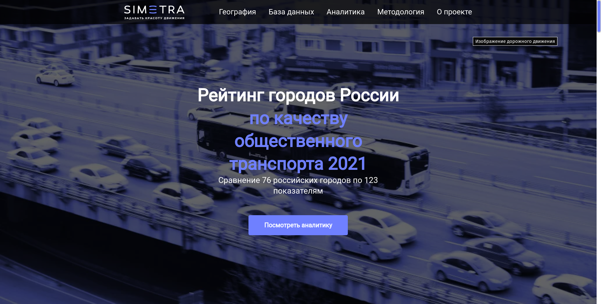
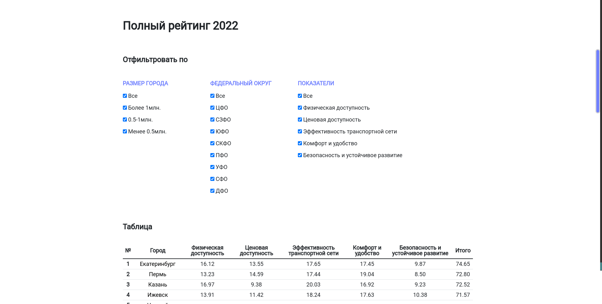
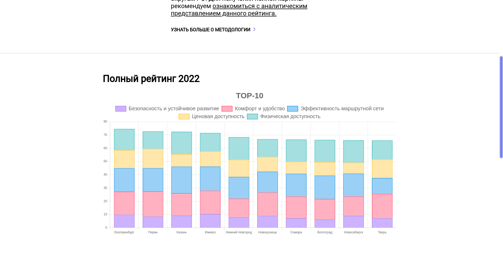
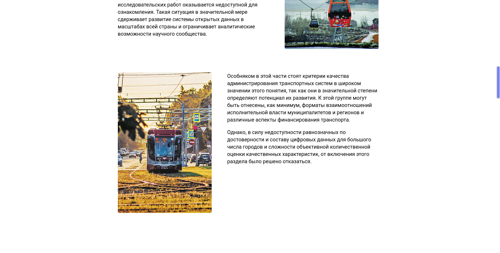
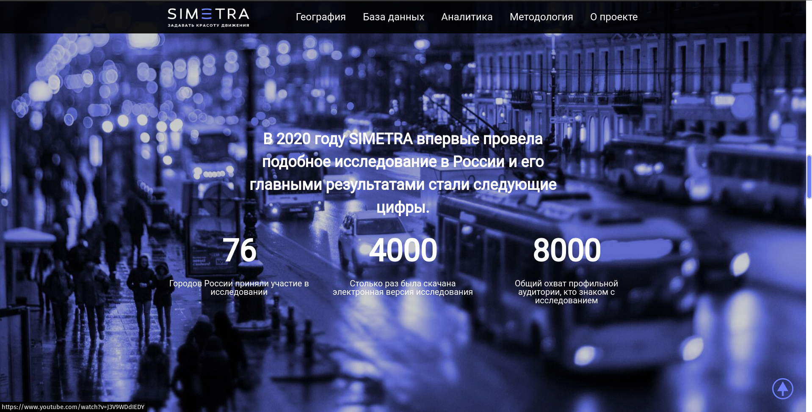
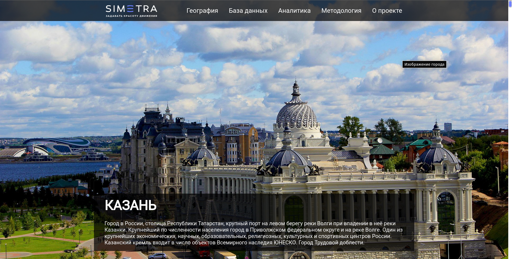
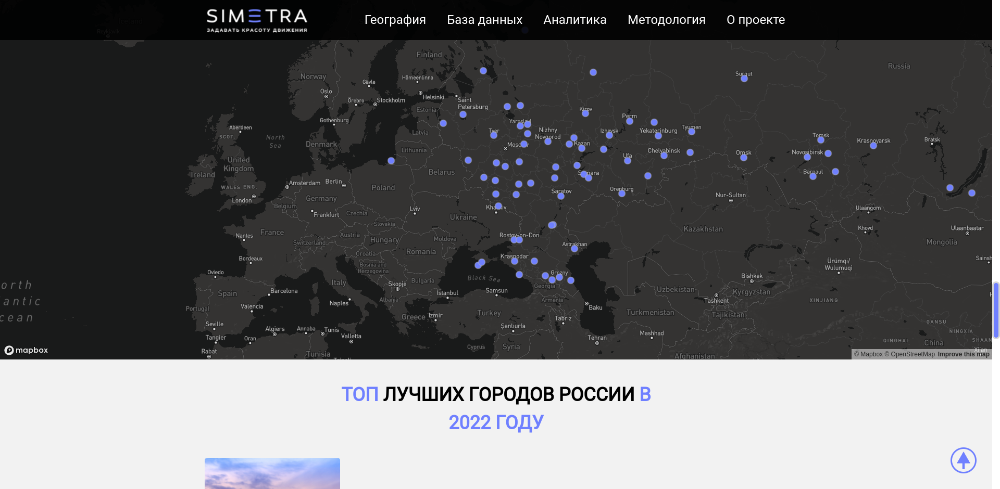

Rating of Cities







A target of the project is collecting data of the scientific research representing a quality of public transport of Russian cities except Moscow and Saint Petersburg.
The project was a part of my summer practice at SPBSTU - the university I studied in. I had a role of a project manager and a fullstack developer.